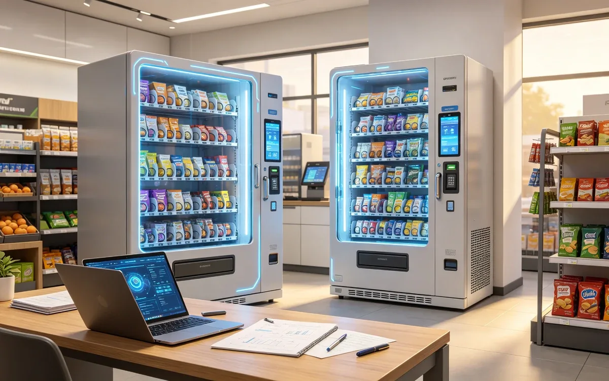

How to Start an AI Vending Business
Start with one pilot location, pick hardware for your product mix, and grow from data. This guide walks through the full launch sequence.

Quick answer
Validate a location, choose hardware for your product mix, negotiate a placement agreement, deploy one unit, and expand only after the data proves the economics.
Step 1: Pick a target location
- Look for steady foot traffic and 24/7 demand.
- Offices, gyms, and residential buildings are the easiest first markets.
- Avoid locations with existing subsidized food programs unless you can differentiate.
Step 2: Choose hardware
- Match the unit to your product mix: refrigerated for fresh, dry for snacks.
- Ask vendors for accuracy tested on your SKUs.
- Compare total 36-month cost, not sticker price.
Step 3: Negotiate the placement
- Agree on revenue share, rent, or flat fee with the venue.
- Clarify power, network, cleaning, and access terms.
- Get the agreement in writing, including exit terms.
Step 4: Deploy and stock
- Install the unit and verify payment and telemetry.
- Start with a focused 30 to 40 SKU mix.
- Schedule restocking and set inventory alerts.
- Train the venue contact on basic troubleshooting.
Step 5: Measure and expand
Watch transactions per day, basket size, and spoilage for 60 to 90 days. Keep proven locations, fix weak ones, and only then add units.
Common mistakes
- Buying a fleet before validating one location.
- Ignoring payment and telemetry fees in the model.
- Stocking what you like instead of what the location buys.